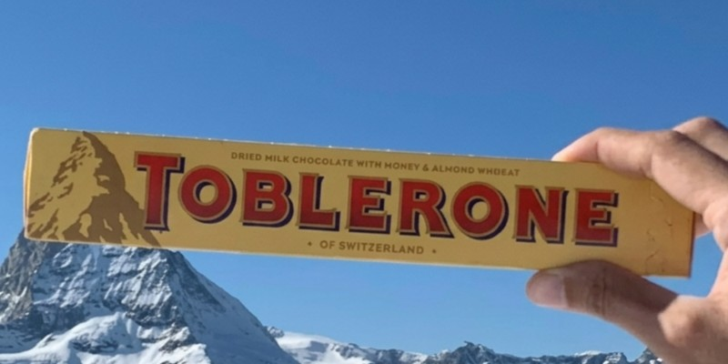

O Matterhorn é uma das montanhas mais icônicas da Suíça, conhecida por sua forma perfeita.
A montanha está localizada na fronteira entre a Suíça e a Itália, com uma altitude de 4.478 metros. É um destino popular para alpinistas e turistas que desejam apreciar sua beleza natural.
O chocolate Toblerone, famoso por seu formato triangular, foi inspirado na silhueta do Matterhorn. A marca Toblerone foi criada em 1908 por Theodor Tobler e Emil Baumann, e desde então se tornou um símbolo do chocolate suíço.